Pareas
The genus Pareas (family Pareidae) has 27 living species in SnakeList (none venomous), recorded in 15 countries.
- 27living species
- 27non-venomous
- 15countries
About the genus
A genus of the family Pareidae (snail-eating snakes).
Species
Showing 27 species
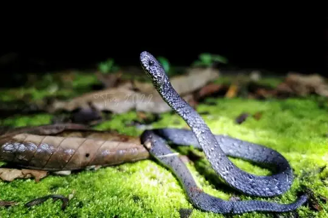
Anderson’s Slug SnakePareas andersonii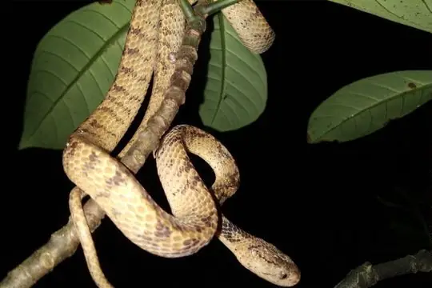
Atayal Slug-eating SnakePareas atayal Barred Slug-eating SnakePareas nuchalis
Barred Slug-eating SnakePareas nuchalis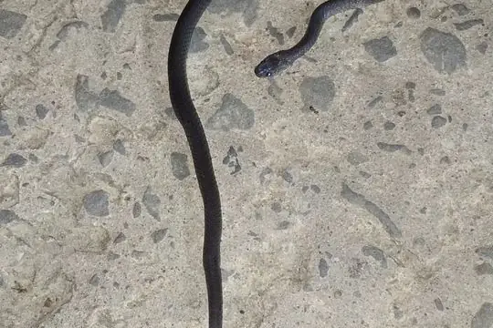
Black Slug SnakePareas modestus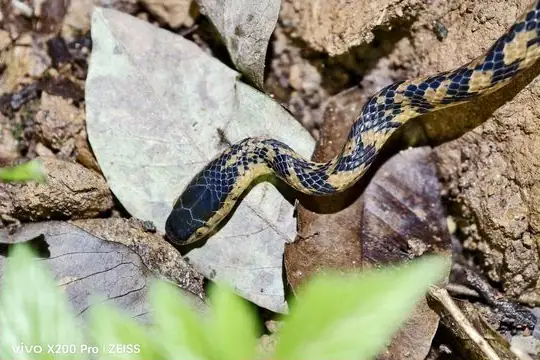
Black Snail-eating SnakePareas niger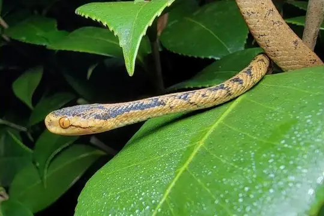
Boulenger's Slug SnakePareas boulengeri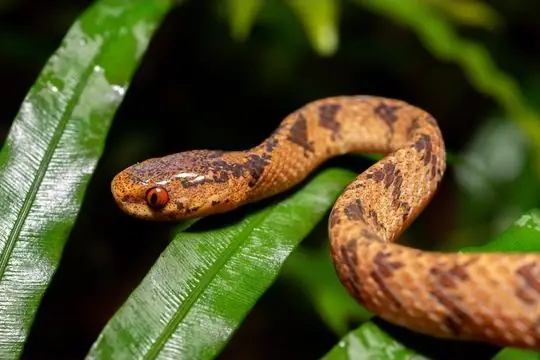
Chinese Slug SnakePareas chinensis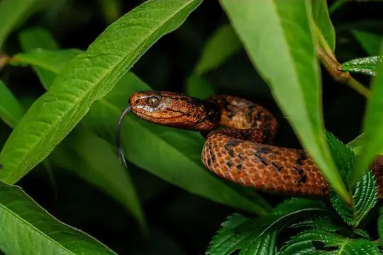
Common Slug SnakePareas monticola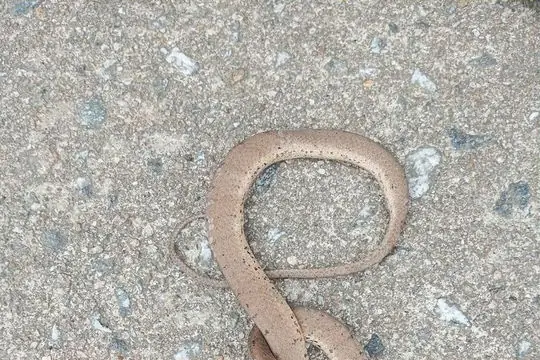
Cute Slug-eating SnakePareas abros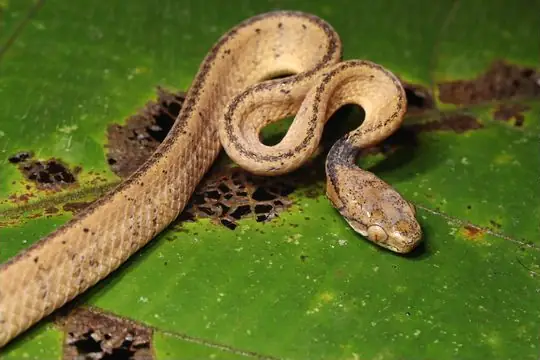
Di Linh Slug-eating SnakePareas temporalis Formosa Slug SnakePareas formosensis
Formosa Slug SnakePareas formosensis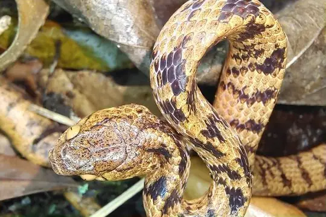
Hampton's Slug SnakePareas hamptoni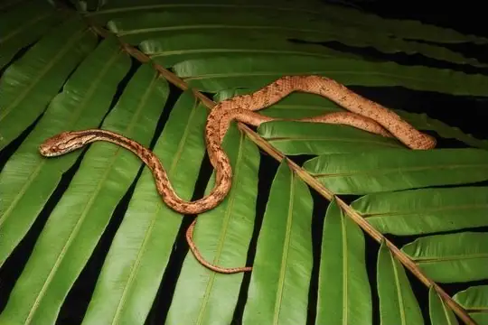
Iwasaki's Snail-eaterPareas iwasakii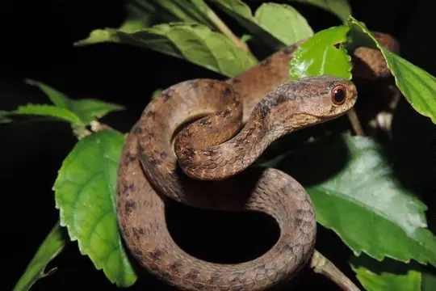
Keeled Slug SnakePareas carinatus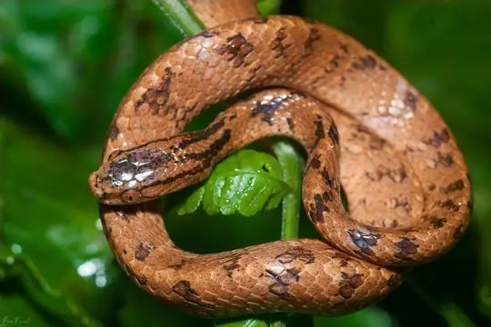
Koma's Formosa Slug SnakePareas komaii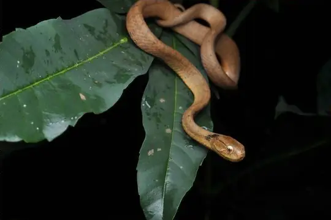
Kuznetsovs’ Slug-eating SnakePareas kuznetsovorum Mountain Slug SnakePareas margaritophorus
Mountain Slug SnakePareas margaritophorus Spotted Slug SnakePareas macularius
Spotted Slug SnakePareas macularius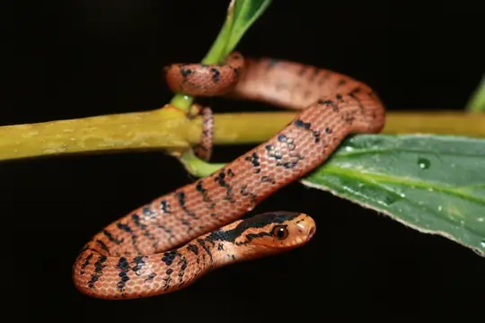
Stanley's Slug SnakePareas stanleyi- No photo yetTiger Slug-eating SnakePareas tigerinus
- No photo yetVictoria Slug SnakePareas victorianus
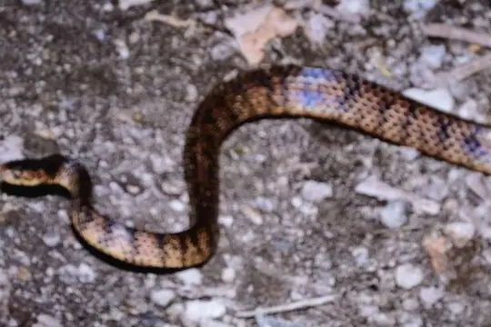
Vindum's Slug EaterPareas vindumi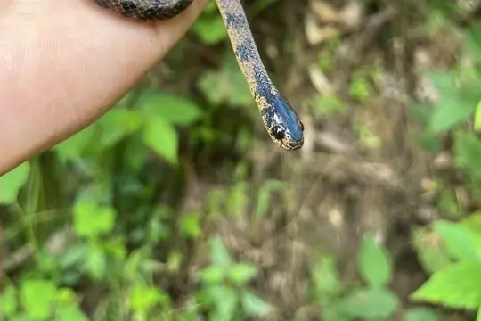
Xiaoheishan Slug-eater SnakePareas nigriceps Pareas geminatus
Pareas geminatus- No photo yetPareas kaduri
- No photo yetPareas menglaensis
- No photo yetPareas xuelinensis
No snakes in Pareas match.
About the genus Pareas
Compare its species
Its living species side by side. Lengths come only from SnakeList’s reviewed, sourced accounts; the others are left blank rather than guessed.
Show the table of all 27 species
| Species | Venom | Recorded in | Adult length (reviewed accounts) |
|---|---|---|---|
| Anderson’s Slug Snake Pareas andersonii | Non-venomous | 3 countries (Asia) | No reviewed account yet |
| Atayal Slug-eating Snake Pareas atayal | Non-venomous | 1 country (Asia) | No reviewed account yet |
| Barred Slug-eating Snake Pareas nuchalis | Non-venomous | 2 countries (Asia) | No reviewed account yet |
| Black Slug Snake Pareas modestus | Non-venomous | 2 countries (Asia) | No reviewed account yet |
| Black Snail-eating Snake Pareas niger | Non-venomous | 1 country (Asia) | No reviewed account yet |
| Boulenger's Slug Snake Pareas boulengeri | Non-venomous | 1 country (Asia) | No reviewed account yet |
| Chinese Slug Snake Pareas chinensis | Non-venomous | 2 countries (Asia) | No reviewed account yet |
| Common Slug Snake Pareas monticola | Non-venomous | 4 countries (Asia) | No reviewed account yet |
| Cute Slug-eating Snake Pareas abros | Non-venomous | 1 country (Asia) | No reviewed account yet |
| Di Linh Slug-eating Snake Pareas temporalis | Non-venomous | 1 country (Asia) | No reviewed account yet |
| Formosa Slug Snake Pareas formosensis | Non-venomous | 4 countries (Asia) | No reviewed account yet |
| Hampton's Slug Snake Pareas hamptoni | Non-venomous | 3 countries (Asia) | No reviewed account yet |
| Iwasaki's Snail-eater Pareas iwasakii | Non-venomous | 1 country (Asia) | No reviewed account yet |
| Keeled Slug Snake Pareas carinatus | Non-venomous | 1 country (Asia) | No reviewed account yet |
| Koma's Formosa Slug Snake Pareas komaii | Non-venomous | 3 countries (Asia) | No reviewed account yet |
| Kuznetsovs’ Slug-eating Snake Pareas kuznetsovorum | Non-venomous | 1 country (Asia) | No reviewed account yet |
| Mountain Slug Snake Pareas margaritophorus | Non-venomous | 8 countries (Asia) | No reviewed account yet |
| Spotted Slug Snake Pareas macularius | Non-venomous | 6 countries (Asia) | No reviewed account yet |
| Stanley's Slug Snake Pareas stanleyi | Non-venomous | 1 country (Asia) | No reviewed account yet |
| Tiger Slug-eating Snake Pareas tigerinus | Non-venomous | 1 country (Asia) | No reviewed account yet |
| Victoria Slug Snake Pareas victorianus | Non-venomous | 1 country (Asia) | No reviewed account yet |
| Vindum's Slug Eater Pareas vindumi | Non-venomous | 2 countries (Asia) | No reviewed account yet |
| Xiaoheishan Slug-eater Snake Pareas nigriceps | Non-venomous | 1 country (Asia) | No reviewed account yet |
| Pareas geminatus | Non-venomous | 3 countries (Asia) | No reviewed account yet |
| Pareas kaduri | Non-venomous | 1 country (Asia) | No reviewed account yet |
| Pareas menglaensis | Non-venomous | 1 country (Asia) | No reviewed account yet |
| Pareas xuelinensis | Non-venomous | 1 country (Asia) | No reviewed account yet |